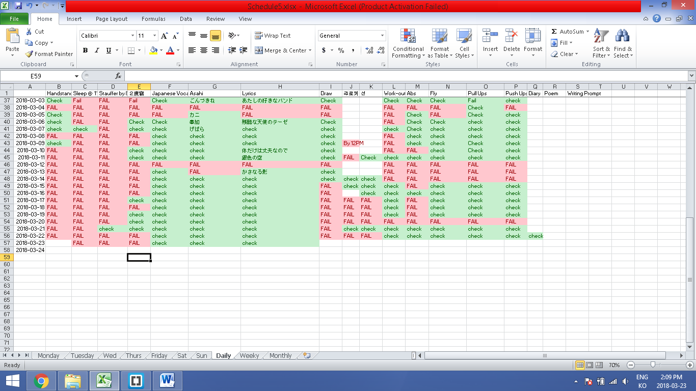

I got up at 10 am. It’s even worse than yesterday. And I have not been productive today. God damn it, why is it always the same story that I am telling. So starting tomorrow, my number one priority is going to be arriving at Stauffer library by 8am.
Also because I have more-or-less finished working on my website, I am kind of lost what my ‘next thing’ is. I am still waiting for my tablet pen to be shipped since I have lost it last week. It was a hella expensive pen, costing me close to $70. So hopefully, I will get on drawing anime and uploading up Youtube as soon as the pen arrives. But then again, I know that there are things that I can do right now even without the pen – for example, drawing so called “conti” (I think it’s called storyboard in English) or practicing drawing using a pen on papers – so again, without a failure, this is my way of procrastinating.
Why do I procrastinate? Because I am a goal-oriented person and I don’t have a goal right now other than working out every day and some other small daily to-dos. Writing diary is one of my daily to-dos as well. But then, I have this feeling that I am really not trying my best- and it’s only when I self-reflect do I really notice this feeling. Because today, just like f**king yesterday, I’ve succumbed to my lazy-bastard-self-conscious again and decided to go back to sleep after waking up. Someone once said insanity is doing the same thing over and over again and expecting different results. Well, isn’t that what I am doing. So what should I do differently?
Well, I do have a to-do tracking sheet, in which I write down all my daily to-dos. Please look at the picture below to have a look.

So this is what I’ve decided to change. I’ve decided to move ‘Handstand’, ‘Sleeping at 11pm’ , ‘Stauffer by 8am’ and ‘二度寝’ (Nidone – which means ‘falling back to sleep again in the morning’ in Japanese) to the left side, in which I tend to prioritize more.
There are so many unfulfilling days where I feel like I haven’t done anything. And it’s not like the lyrics of the song that Burno Marz sings that goes like this: “Today I don’t feel like doing anything”. It’s more like “Why do I not feel like doing anything EVERYDAY”. It’s hard to keep myself motivated when I know I can just binge watch anime with the excuse of ‘I am working on the Japanese listening comprehension with Japanese media’. Oh Come On, Jinboi. You know that’s a pathetic, loser excuse.
So yeah, what do you want to do? What do you want to do in life? Shit, this is something Raluca, my ex co-worker –well, more like my senpai in my previous workplace since she was in her 30s and had such an adorable cute little 2 year-old daughter- said. What do you want to do in life? What is it that you want to achieve that makes you feel shitty when you realize you haven’t done shit? Well, I want to be loved. Because I know what it’s like to be loved and famous and popular, I crave it. I miss being the man with boyish heart who’s cheeky with confidence to the point it appears to be a little cocky from time to time. I want to be an alpha. I want to live a life where I am the main character who gets all the spotlights. That’s what I want. And that’s why I have this website and why I am working hard – though I doubt whether I am working hard or just hardly working sometimes- to be who I want to be after 5 years. This is why I work out and this is what I want in my life. I want to live like a king.